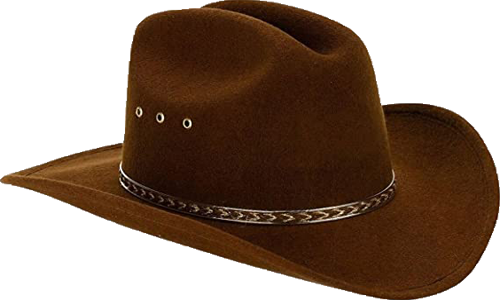

INICIO
¿Cómo era la vestimenta de los vaqueros del Lejano Oeste?
|
Una de las indumentarias más famosas del cine es la de los cowboys americanos. Popularizada y exagerada en los westerns de Hollywood, la vestimenta de los vaqueros en el Lejano Oeste tiene su origen en el atuendo de los mexicanos y los conquistadores españoles.
El conjunto de los vaqueros está formado por una serie de artículos indispensables que surgieron de las necesidades prácticas de su trabajo y del duro entorno en el que vivían en el Oeste. Esta serie de prendas han convertido el traje de cowboy en todo un clásico.
|
Sombrero vaquero

El sombrero de vaquero posiblemente sea el artículo que más define al cowboy. Son de copa alta y cuentan con una ala extremadamente grande para protegerse del sol y ligeramente doblada a los lados. La mayoría incluyen una tira para evitar que se vuele con el viento.Fue en México donde surgió el sombrero de vaquero, que a su vez tiene su origen en España y su tradición hípica que trasladó al Nuevo Mundo.
Hay que tener en cuenta que antes de la guerra estadounidense-mexicana, los estados sureños de EE.UU. como California y Texas formaban parte de México.
El sombrero más famoso fue el Boss of Plains (“Jefe de las llanuras”), creado en 1865 por John B. Stetson, y que alcanzó fama mundial con las películas de vaqueros.
Botas
Las botas son, junto con el sombrero, el artículo más característico de la vestimenta de los vaqueros en el Oeste, igualmente importado por los jinetes españoles.
Son bastante altas para proteger las piernas, con una punta pronunciada, tacón alto para que encajen bien en los estribos y a veces llevan espuelas.
Las botas vaqueras originales estaban hechas de piel de vaca, pero también de otras especies como de serpiente, caimán o avestruz.
Bandana
La bandana es un tipo de pañuelo que servía a los cowboys para cubrirse del polvo cuando cabalgaban o cuando tenía lugar una tormenta de arena.
También la usaban para proteger el cuello del sol. Su función era sobre todo práctica.
Chaparreras
Las Chaparreras fueron inventadas por los colonizadores españoles para protegerse las piernas de los largos matorrales y sus espinas, así como del alambre de púas, mientras cabalgaban. Más tarde fueron adoptadas por los vaqueros americanos.
Estas suelen ser de cuero y su largo varía según la región. Las chaparras originales de los mexicanos consistían una manta de cuero que se sostenía con un cinturón y que cubría ambas piernas.
Jeans y Camisa

Todo traje tradicional de vaquero del Oeste debe llevar unos jeans como pantalones. Este material se hizo popular a finales del siglo XIX. Asimismo, era común llevar camisas de denim
Guantes
Otro complemente menos vistoso pero muy práctico para los vaqueros son los guantes. Generalmente son de cuero suave y flexible para poder realizar con comodidad las tareas del campo, al tratar los alambres de púas o quitar maleza.
Lazo
Otro de los elementos típicos que podemos apreciar en las películas del Oeste es el lazo. Se trata de una soga dura, que antiguamente era de cuero, y que se utiliza para capturar animales.
Tiene un nudo corredizo en uno de sus extremos. Hoy en día también se utiliza en los rodeos y su manejo es considerado todo un arte
Espuelas
No todas las botas cuentan con espuelas, pero estas son muy distintivas de los cowboys. Se trata de una pequeña rueda dentada en forma de estrella unida al talón de la bota que sirve que para dirigir los movimientos del caballo
Revólver
Tal y como se muestra en los spaghetti western, un auténtico vaquero no era nadie sin su revólver, que utilizaba a menudo para batirse en duelo y lo llevaba atado al cinto. En la vida real, los cowboys tenían un arma fundamentalmente para proteger al ganado de posibles depredadores. Actualmente, manejan sobre todo rifles.